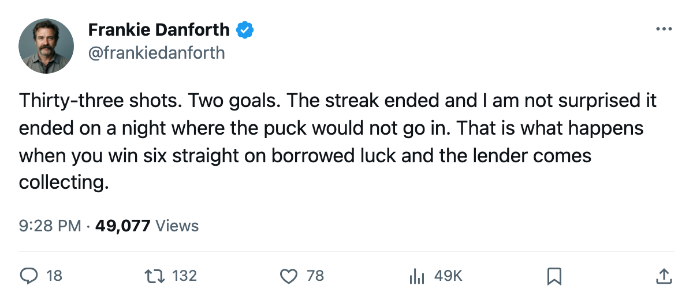

DAL
DAL SJ
SJDANFORTH: Code Yellow, 2 on 33, and a streak that ended because nothing went in
I said Toronto earns at least 1 point at Dallas. They earned 0. Here is the part I did not expect
 Frankie DanforthColumnist · Queen City Telegram
Frankie DanforthColumnist · Queen City Telegram
Code Yellow

I predicted Toronto earns at least 1 point at Dallas on 2005-11-08. They lost 4-2 and earned 0. I own that miss on the page.
What I did not predict, and what keeps me at Code Yellow instead of pushing me up, is the shot number. Thirty-three attempts on goal. Two of them went in. Dallas needed 23 to bury 4.
The problem was never possession
For six straight wins the Leafs won while being outshot. I wrote about that pattern three days ago: a win streak built on borrowed pucks. The streak is now over, and the same puck-distribution problem has reappeared from the other end. You cannot win when 33 chances produce 2 goals, and you certainly cannot win when the other side converts 4 of 23.
The Bureau's Development Index carries  Marian Gaborik99 at +11 on the overall, reading 99. He has 5 goals and 1 assist in 13 games. The grade says he is the best player on the roster by 12 full points over the next man. The stat line says 6 points on a $11.90M contract. I have been calling this a contract problem since April. The Index says his form is up. Six points is not up.
Marian Gaborik99 at +11 on the overall, reading 99. He has 5 goals and 1 assist in 13 games. The grade says he is the best player on the roster by 12 full points over the next man. The stat line says 6 points on a $11.90M contract. I have been calling this a contract problem since April. The Index says his form is up. Six points is not up.
The lead is what it is
 Toronto Maple Leafs carries 22 points in 14 games.
Toronto Maple Leafs carries 22 points in 14 games.  Boston Bruins has 17 in 12, with 2 games still in hand. That is the entire picture of the Northeast division right now.
Boston Bruins has 17 in 12, with 2 games still in hand. That is the entire picture of the Northeast division right now.
If Boston wins its 2 games in regulation, it sits at 21. The lead becomes 1 point. That is the arithmetic that makes me Yellow, not Green.
The kid on $2.34M
Petr Chlup87 has 12 points in 14 games. He is 19. His return date is tomorrow. The man I wanted behind Sundin since December 2004, the one I have been asking the question about for the better part of two years, is already on the second line, already producing more than the man on the first line's right wing, already back tomorrow.
 Brad Richards87 has 1 goal and 7 assists in 14 games on $6.70M. He plays 13.1 minutes a night. He is 87 in the Book. The line is: I would trade one Richards for the points the kid is producing and half the minutes the kid is carrying.
Brad Richards87 has 1 goal and 7 assists in 14 games on $6.70M. He plays 13.1 minutes a night. He is 87 in the Book. The line is: I would trade one Richards for the points the kid is producing and half the minutes the kid is carrying.
What holds it at Yellow
The streak is gone and the conversion is bad. The lead is 22 points and Boston has 2 games to claw back into. Chlup comes back tomorrow, the Index has Klesla at +8 and Chistov at +8 and Nash at +7, and Toronto plays San Jose today, a team on a 3-game losing streak with 13 points in 12 games.
That is enough to keep the Panic Meter at Yellow. Not Green. The shot sheet said 33 on Monday, and I watched 31 of them miss the net.
